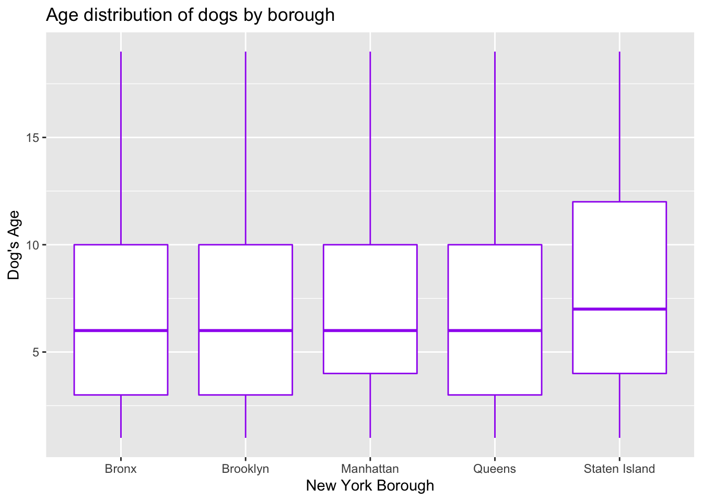
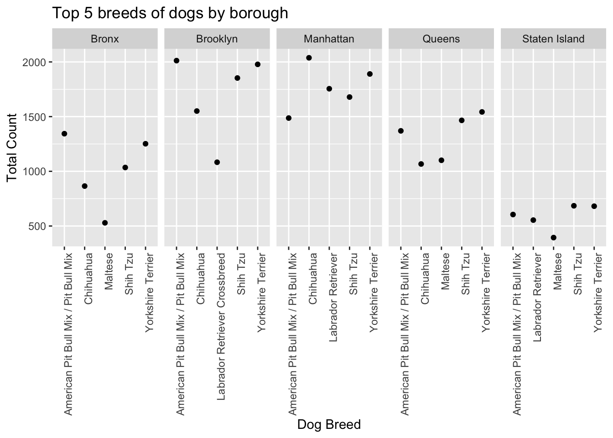
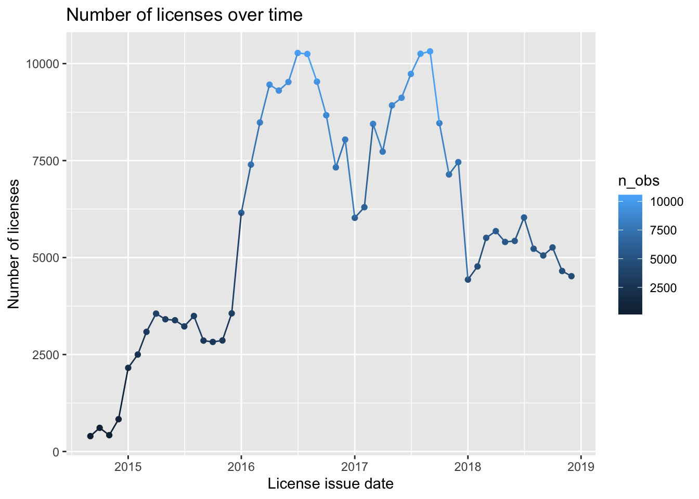
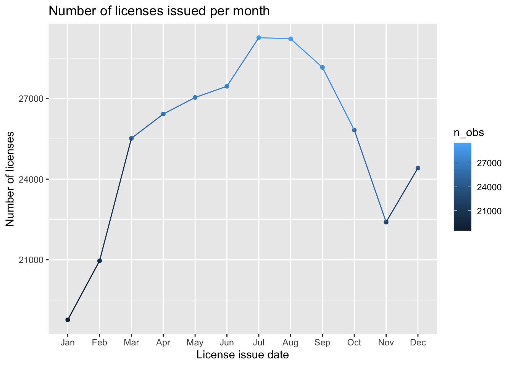
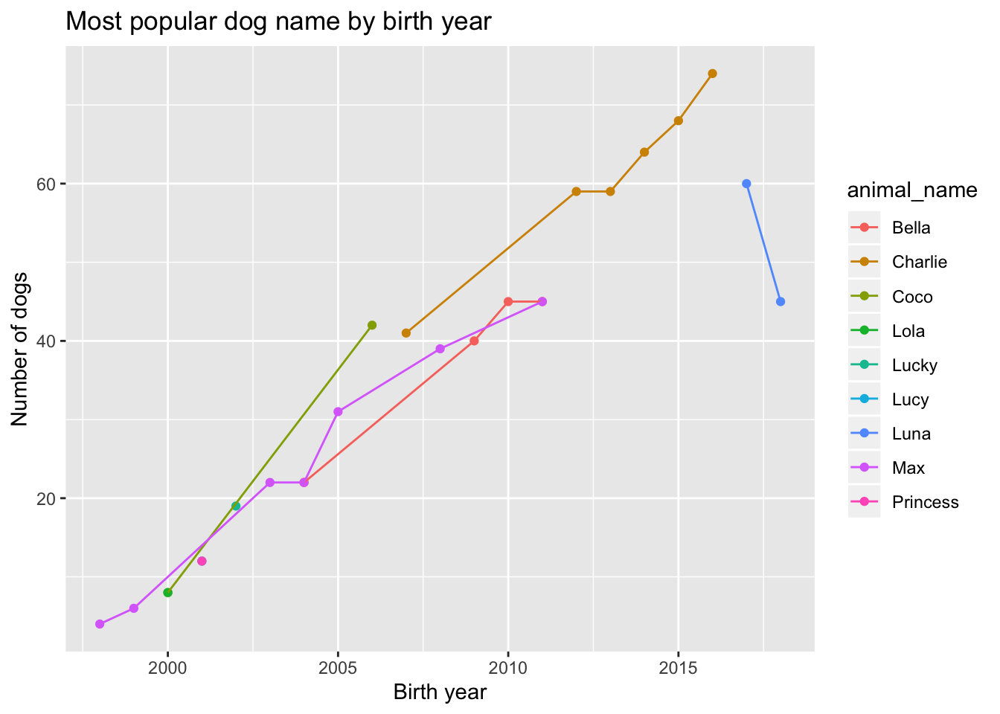

Project Report: Data Sci Doggos
Naina Ahuja, Mary Knoop, Sam Loewen, Uma Palaniappan, Britney Mazzetta
December 5, 2019
knitr::opts_chunk$set(echo = TRUE)
library(tidyverse)
library(lubridate)
library(viridis)
library(leaflet)\(~\)
Motivation
\(~\)
Goals of our project
\(~\)
Initial Questions
\(~\)
Data
\(~\)
Exploratory Analysis
\(~\)
Loading and tidying the data
Talk about data cleaning process and what we did
\(~\)
lat_lon = read.csv("./data/lat-long.csv")
dogz = read.csv("./data/NYC_Dog_Licensing_Dataset.csv") %>%
janitor::clean_names() %>%
filter(breed_name != "Unknown",
extract_year-animal_birth_month < 20) %>%
mutate(animal_name = str_to_sentence(animal_name),
borough = ifelse(zip_code %in% c(10001:10282),"Manhattan", borough),
borough = ifelse(zip_code %in% c(10301:10314), "Staten Island", borough),
borough = ifelse(zip_code %in% c(10451:10475), "Bronx", borough),
borough = ifelse(zip_code %in% c(11004,11101:11106,11109,11351,11354:11375,11377:11379,11385,11411:11423,11426:11430,11432:11436,11691:11694,11697), "Queens", borough),
borough = ifelse(zip_code %in% c(11201,11203:11226,11228:11239,11241:11243,11249,11252,11256), "Brooklyn", borough),
borough = as.factor(borough),
breed_name = as.character(breed_name),
license_issued_date = as.Date(license_issued_date, format = "%m/%d/%Y"),
license_expired_date = as.Date(license_expired_date, format = "%m/%d/%Y"),
license_length = year(license_expired_date) - year(license_issued_date),
dog_age = 2019 - animal_birth_month,
breed_name = ifelse(breed_name == "American Pit Bull Terrier/Pit Bull", "American Pit Bull Mix / Pit Bull Mix", breed_name),
breed_name = ifelse(breed_name == "American Pit Bull Terrier/Pit Bull", "American Pit Bull Mix / Pit Bull Mix", breed_name),
breed_name = ifelse(breed_name == "Australian Cattle Dog", "Australian Cattledog", breed_name),
breed_name = ifelse(breed_name == "Bassett Hound", "Basset Hound", breed_name),
breed_name = ifelse(breed_name == "Brittany", "Brittany Spaniel", breed_name),
breed_name = ifelse(breed_name == "Coonhound, Black and Tan", "Black and Tan Coonhound", breed_name),
breed_name = ifelse(breed_name == "Coonhound, Black and Tan", "Black and Tan Coonhound", breed_name),
breed_name = ifelse(breed_name == "Coonhound, Blue Tick", "Bluetick Coonhound", breed_name),
breed_name = ifelse(breed_name == "Coonhound, Treeing Walker", "Treeing Walker Coonhound", breed_name),
breed_name = ifelse(breed_name == "Cotton de Tulear", "Coton de Tulear", breed_name),
breed_name = ifelse(breed_name == "Japanese Chin/Spaniel", "Japanese Chin", breed_name),
breed_name = ifelse(breed_name == "Jindo Dog, Korea", "Jindo", breed_name),
breed_name = ifelse(breed_name == "Mastiff, French (Dogue de Bordeaux)", "Dogue de Bordeaux", breed_name),
breed_name = ifelse(breed_name == "Pharoh hound", "Pharaoh Hound", breed_name),
breed_name = ifelse(breed_name == "Schipperke", "Schipperkee", breed_name),
breed_name = ifelse(breed_name == "Schnauzer, Miniature", "Miniature Schnauzer", breed_name),
breed_name = ifelse(breed_name == "Schnauzer, Miniature Crossbreed", "Miniature Schnauzer, Crossbreed", breed_name),
breed_name = ifelse(breed_name == "Welsh Corgi, Cardigan", "Cardigan Welsh Corgi", breed_name),
breed_name = ifelse(breed_name == "Welsh Corgi, Pembroke", "Pembroke Welsh Corgi", breed_name),
breed_name = ifelse(breed_name == "Bull Dog, French", "French Bulldog", breed_name),
breed_name = ifelse(breed_name == "Collie, Bearded", "Bearded Collie", breed_name),
breed_name = ifelse(breed_name == "Bullmastiff", "Mastiff, Bull", breed_name),
breed_name = ifelse(breed_name == "Neapolitan Mastiff", "Mastiff, Neapolitan", breed_name),
breed_name = ifelse(breed_name == "Tibetan Mastiff", "Mastiff, Tibetan", breed_name),
breed_name = ifelse(breed_name == "Pointer, German Shorthaired", "German Shorthaired Pointer", breed_name),
breed_name = ifelse(breed_name == "Pointer, German Wirehaired", "German Wirehaired Pointer", breed_name),
breed_name = ifelse(breed_name == "Schnauzer, Giant", "Giant Schnauzer", breed_name),
breed_name = ifelse(breed_name == "Schnauzer, Standard", "Standard Schnauzer", breed_name),
breed_name = ifelse(breed_name == "Chinese Shar-Pei", "Shar-Pei, Chinese", breed_name)) %>%
drop_na(borough) %>%
rename(animal_birth_year = animal_birth_month, license_id = row_number) %>%
select(-extract_year)Talk about the 2 distinctions between the datasets below
dogz_1 =
dogz %>%
distinct(animal_name, animal_gender, animal_birth_year, breed_name, .keep_all = TRUE) %>%
select (-license_issued_date, -license_expired_date, -license_length)
distinct_dogz =
left_join(dogz_1, lat_lon, by = "zip_code") %>%
select(-City,-State,-Timezone,-Daylight.savings.time.flag,-geopoint) %>%
janitor::clean_names()Gender of dogs by borough
plot_2=
distinct_dogz %>%
filter(animal_gender == "M" | animal_gender == "F") %>%
ggplot(aes(x = borough, fill = animal_gender)) +
geom_histogram(position = "dodge", stat = "count") +
labs(
title = "Gender of dogs by borough",
x = "New York Borough",
y = "Dog Gender"
)
plot_2Age Distribution of Dogs by Boroughs
plot_3=
ggplot(distinct_dogz, aes(x = borough, y = dog_age)) +
geom_boxplot (color = "purple") +
labs(
title = "Age distribution of dogs by borough",
x = "New York Borough",
y = "Dog's Age"
)
plot_3
Top Breed of dogs by Borough
plot_4=
distinct_dogz %>%
group_by(borough) %>%
count(breed_name) %>%
top_n(5) %>%
ggplot(aes(x = breed_name, y = n)) +
geom_point() +
theme(axis.text.x = element_text(angle = 90, hjust = 1)) +
facet_grid(~borough) +
labs(
title = "Top 10 breeds of dogs by borough",
x = "Dog Breed",
y = "Total Count"
)
plot_4
Number of licenses over time (license issue date vs. number of licenses)
plot_5.5=
dogz %>%
mutate(license_issued_date = floor_date(as_date(license_issued_date), "month")) %>%
group_by(license_issued_date) %>%
summarize(n_obs = n()) %>%
ggplot(aes(x = license_issued_date, y = n_obs, color = n_obs)) +
geom_point() + geom_line() +
labs(title = "Number of licenses over time",
x = "License issue date",
y = "Number of licenses")
plot_5.5
Number of licenses issued per month (liscence issue date vs. number of liscences)
plot_5.51=
dogz %>%
mutate(license_issued_date = month(license_issued_date),
license_issued_date = month.abb[license_issued_date],
license_issued_date = factor(license_issued_date, c("Jan","Feb", "Mar", "Apr", "May", "Jun", "Jul","Aug", "Sep", "Oct","Nov", "Dec"), ordered = TRUE)) %>%
group_by(license_issued_date) %>%
summarize(n_obs = n()) %>%
ggplot(aes(x = license_issued_date, y = n_obs)) +
geom_point() + geom_line(group=1) +
labs(title = "Number of licenses issued per month",
x = "License issue date",
y = "Number of licenses")
plot_5.51
Most popular dog name by birth year
top_dogz =
distinct_dogz %>%
filter(animal_name != "Unknown",
animal_name != "Name not provided") %>%
group_by(animal_name) %>%
summarize(n_obs = n()) %>%
arrange(desc(n_obs)) %>%
top_n(10)
knitr::kable(top_dogz)| animal_name | n_obs |
|---|---|
| Max | 720 |
| Charlie | 696 |
| Bella | 667 |
| Coco | 633 |
| Lucy | 568 |
| Lola | 539 |
| Rocky | 535 |
| Bailey | 529 |
| Buddy | 503 |
| Lucky | 497 |
plot_6 =
distinct_dogz %>%
filter(animal_name != "Unknown",
animal_name != "Name not provided",
animal_name != "Name",
animal_birth_year != 1997) %>%
group_by(animal_birth_year, animal_name) %>%
summarize(n_obs = n()) %>%
top_n(1) %>%
ggplot(aes(x=animal_birth_year, y=n_obs, group = animal_name, color = animal_name)) + geom_point() + geom_line() +
labs(title = "Top name by birth year",
x = "Birth year",
y = "Number of dogs")
plot_6
Map
\(~\)
Findings
\(~\)
Additional Analysis
#create reference groups that are coded as
distinct_dogz_reg =
distinct_dogz %>%
mutate(
borough = fct_infreq(borough),
animal_gender = fct_infreq(animal_gender),
breed_name = fct_infreq(breed_name)
)
#run linear regression with dog age as Y and borough, breed name and animal gender as categorical
fit = lm(dog_age ~ borough + animal_gender, data = distinct_dogz)
#view outputs
fit %>%
broom::tidy()## # A tibble: 7 x 5
## term estimate std.error statistic p.value
## <chr> <dbl> <dbl> <dbl> <dbl>
## 1 (Intercept) 16.5 2.00 8.27 1.30e- 16
## 2 boroughBrooklyn 0.0510 0.0457 1.11 2.65e- 1
## 3 boroughManhattan 0.520 0.0439 11.8 2.82e- 32
## 4 boroughQueens 0.473 0.0479 9.88 5.42e- 23
## 5 boroughStaten Island 1.25 0.0588 21.2 9.03e-100
## 6 animal_genderF -9.72 2.00 -4.86 1.16e- 6
## 7 animal_genderM -9.89 2.00 -4.95 7.47e- 7#create tidy table
fit %>%
broom::tidy() %>%
select(term, estimate, p.value) %>%
knitr::kable(digits = 3)| term | estimate | p.value |
|---|---|---|
| (Intercept) | 16.541 | 0.000 |
| boroughBrooklyn | 0.051 | 0.265 |
| boroughManhattan | 0.520 | 0.000 |
| boroughQueens | 0.473 | 0.000 |
| boroughStaten Island | 1.247 | 0.000 |
| animal_genderF | -9.717 | 0.000 |
| animal_genderM | -9.892 | 0.000 |
#graph residuals for each borough
distinct_dogz_reg %>%
modelr::add_residuals(fit) %>%
ggplot(aes(x = borough, y = resid)) + geom_violin()
\(~\)